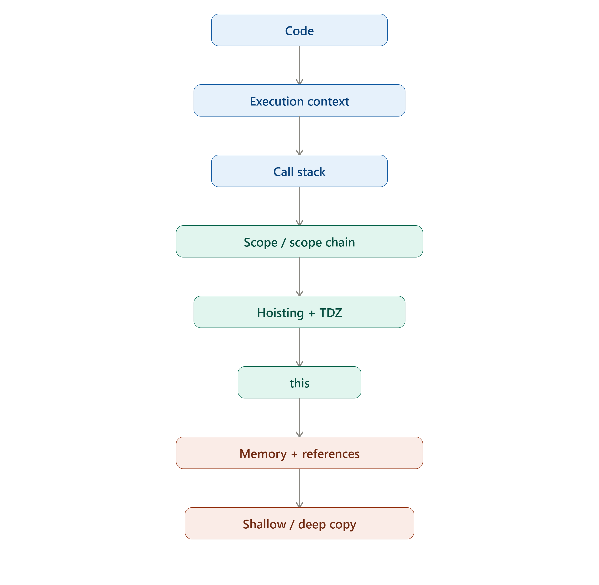

JavaScript
Behind the Scenes

1. Execution Context
Execution Context JavaScript ka code execute hote hi ek Execution Context (workspace) ban jata hai.
Types
- Global Execution Context: Created when the JavaScript program starts running.
- Function Execution Context: Created whenever a function is called.
- Eval Execution Context: Created when eval() is used; it is rarely used in modern JavaScript.
2. Call Stack
Call Stack JavaScript ka mechanism hai jo track karta hai ke kaunsa function currently execute ho raha hai.
function first() {
second();
}
function second() {
third();
}
function third() {
console.log("Hello");
}
first();Flow: Global → first() → second() → third(). Third complete hoga to stack se remove, phir second, phir first.
3. Scope
Scope • Scope variable ki accessibility range ko kehte hain — yani variable ko code ke kis area mein access/use kiya ja sakta hai.
const name = "Ali";
function greet() {
console.log(name);
}here nameis accessible inside the function because it is in the outer scope.
Types of Scope
Global Scope
const name = "Ali";
console.log(name);Function Scope
function test() {
const age = 20;
console.log(age);
}
// console.log(age); // ErrorBlock Scope
if (true) {
let age = 20;
const name = "Ali";
}
// console.log(age); // Errorvar vs let vs const
| Feature | var | let | const |
|---|---|---|---|
| Function scoped | ✓ | ❌ | ❌ |
| Block scoped | ❌ | ✓ | ✓ |
| Redeclare | ✓ | ❌ | ❌ |
| Reassign | ✓ | ✓ | ❌ |
| Hoisted | ✓ | ✓* | ✓* |
let aur const hoisted hote hain, lekin initialization se pehle TDZ mein rehte hain.
4. Scope Chain
Agar variable current scope mein nahi milta, JavaScript outer scope mein search karti hai.
inner() pehle apne scope, phir outer(), phir global scope mein search karta hai.
5. Variable Environment
Har Execution Context ke paas ek Variable Environment hota hai jahan us context ke variables aur function declarations ka record hota hai.
Yahan name Global Environment mein hai, jabke
message greet() ke Variable Environment mein hai.
6. Hoisting
Hoisting ka matlab hai JavaScript execution se pehle declarations ko apne scope/environment mein register karti hai.
Function Hoisting
7. Temporal Dead Zone — TDZ
TDZ woh period hai jab let/const binding scope mein exist karti hai lekin declaration/initialization se pehle access nahi ki ja sakti.
let/const declaration → TDZ → initialization → usable8. The this Keyword
this ek special keyword hai. Regular functions mein iska value generally
function ko kis tarah call kiya gaya is se determine hota hai.
student.greet() ki tarah call karne par
this us object ko refer karta hai.
Regular Function
const student = {
name: "Ali",
greet: function () {
console.log(this.name);
}
};
student.greet(); // Ali
Regular function mein this calling object ko refer karta hai jab
function ko object method ke taur par call kiya jata hai.
Arrow Function
const student = {
name: "Ali",
greet: () => {
console.log(this.name);
}
};
Arrow function ka apna this nahi hota; woh surrounding lexical
this use karta hai.
this refers to the object or context
associated with the way a function is called.
9. Object References
An object reference is a reference to an object's location in memory. When one object variable is assigned to another, both variables refer to the same object.
const student1 = {
name: "Ali"
};
const student2 = student1;
student2.name = "Ahmed";
console.log(student1.name);
// AhmedPrimitive Copy
Primitive values are copied by value, so changing one variable does not affect the other.
let a = 10;
let b = a;
b = 20;
console.log(a); // 10
console.log(b); // 2010. Shallow Copy vs Deep Copy
Shallow Copy
New outer object banta hai, lekin nested objects/arrays ke references share ho sakte hain.
Nested Object Problem
Deep Copy
Modern JavaScript mein structuredClone() nested data ko deeply clone karne ke liye useful hai.
| Shallow Copy | Deep Copy |
|---|---|
| Outer object new | Outer + nested data independently cloned |
| Nested references share ho sakte hain | Nested references share nahi kiye jate |
{ ...obj } | structuredClone(obj) |
11. Memory Management
JavaScript automatically memory manage karti hai. Is process mein Garbage Collection important role play karti hai.
let user = {
name: "Ali"
};
user = null;Agar object ka koi aur reachable reference nahi hai, to woh garbage collection ke liye eligible ho sakta hai.
Stack vs Heap — Conceptual Model
Stack
Execution-related information aur local bindings ko samajhne ke liye useful conceptual model.
Heap
Objects aur dynamically allocated data ke liye memory area ka conceptual model.